Wang’ap · Outremer 52 · Routage
Le routage pas à pas
L’écran du routage a été réorganisé. Rien n’a disparu : chaque bouton a gardé une place. Cette page le montre étape par étape, avec de vraies captures de l’app.
Les captures viennent d’un essai Gibraltar → Puerto de Mogán / Las Palmas avec des données de test : ni la position, ni les heures, ni les chiffres ne sont ceux de Wang’ap.
Ce qui change
En bref
- Quatre modes, toujours en haut : ① Préparer · ② Résultat · ③ Calculs · ⚙ Réglages. Sur l’iPad couché, ils forment un rail à gauche. « Résultat » reste grisé tant qu’aucun calcul n’existe.
- Huit étapes déjà remplies avec vos valeurs. « Lancer » marche tout de suite : on n’ouvre que ce qu’on veut changer.
- Le coût avant de lancer : une bande au-dessus de « Lancer » dit le temps et la part de la météo du jour.
- Vos réglages du routage sont dans le routage (⚙). Dans les Réglages de l’app, la carte 🧭 Routage ne fait plus qu’ouvrir ceux-ci.
- Rien n’a disparu. ✎ Modifier et ↻ Relancer sont dans le ＋ au bout du fil du Résultat. « 🕘 Mes calculs » est devenu le mode ③ Calculs.
Pour y aller : l’onglet 🧭 du menu du bas, ou le menu de votre avatar → Routage. Dès que vous travaillez dans le routage, le menu du bas se range dans un bouton rond ☰ en bas à droite : touchez-le pour le retrouver. Le panneau se monte et se descend par sa bande du haut (━, ⌃ / ⌄).
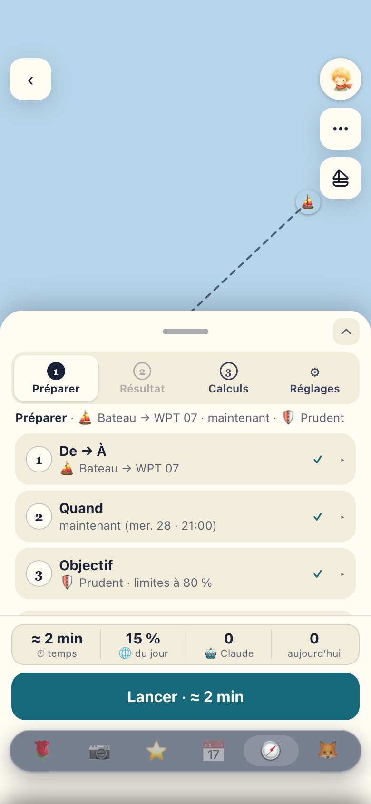
Une minute
Avant de commencer
Le bon moment
- Au port ou au mouillage, Starlink allumé.
- Pas la veille d’un départ. Jamais pendant une traversée.
- Vérifiez la version : Réglages → 🔧 Maintenance technique. Il doit être écrit « Wang’ap v3.50.0 ».
- Si l’app semble ancienne : au même endroit, le bouton Forcer la mise à jour. Ou ouvrez www.wangap.fr/?reset=1.
Économiser les crédits météo
- Open-Meteo, la météo gratuite du calcul, donne ≈ 10 000 crédits par jour, pour tous les calculs.
- Une zone neuve coûte ≈ 1 450 crédits : ≈ 15 % du jour.
- Une destination déjà calculée dans les 3 dernières heures : 0 crédit.
- Pour cliquer partout sans compter : à l’étape 6, 🧪 Fictive (test). Réservé au skipper. Le résultat dit « TEST » partout et ne peut jamais être montré à la famille (📌).
- Un test = un seul vrai calcul.
Une seule convention, partout
Les signes
- ✓
- valeur par défaut : vos réglages.
- ✎
- changé pour ce calcul seulement. Vos réglages ne bougent pas.
- ⚠
- manquant, à voir (par exemple : pas encore d’arrivée).
- ▸ ▾
- se déplie. Toute la ligne se touche, pas seulement la petite flèche.
- ›
- ouvre ailleurs : un autre panneau, une autre page.
- ?
- explique, dans une petite bulle. Touchez dehors ou ✕ pour la fermer.
Sur l’iPhone, une seule étape (ou carte, ou groupe) est ouverte à la fois : en ouvrir une referme l’autre. Sur l’iPad, plusieurs.
① Préparer
Préparer, étape par étape
Chaque ligne fermée dit sa valeur. Ouvrez seulement ce que vous voulez changer. Ce que vous changez ici vaut pour ce calcul seulement (✎).
-
De → À
Fermée
Bateau → WPT 07
- De : le bateau, sa dernière position et son âge (« il y a 2 h » ; en ambre dès 1 h, ⚠ en rouge dès 3 h : il a pu bouger depuis). Changer ouvre les mêmes choix que pour l’arrivée : ⛵ le bateau ; « 📍 Ma position », le GPS de ce téléphone (au mouillage, le PC du bord éteint, c’est la position du moment ; un refus ou un GPS muet est dit) ; « Un point sur la carte » (l’épingle à glisser, puis Confirmer) ; un nom ou des coordonnées ; les lieux récents. Un départ à plus de 20 milles du bateau est signalé, jamais refusé. Après le « ＋ » au bout du fil, ce peut être le départ du calcul d’origine ; « ⛵ partir du bateau » ramène au bateau en un toucher.
- À : déjà remplie avec le waypoint actif du B&G, sinon votre dernière arrivée. ✕ pour en choisir une autre :
- « Waypoint actif du B&G » ;
- un nom (la marina d’abord) ou des coordonnées, dans « Port, marina… ou 28.39, -16.35 » ;
- « Une épingle sur la carte », ou un appui long sur la carte : glissez l’épingle, puis Confirmer ;
- « Destinations récentes ».
- « ≈ 700 milles à vol d’oiseau · cap initial 230° — pas une route » : un ordre d’idée, pas la route.
![L’étape 1 ouverte, le départ en train de changer : De, « Port, mouillage… ou 29.22, -13.53 » ; Le bateau, sa dernière position 28,60 N 16,00 O, il y a 7 h (choisi) ; Ma position, le GPS de cet appareil — à bord, la position du moment ; Un point sur la carte, une épingle à glisser, ou un appui long sur la carte, puis Confirmer ; Garder ce départ. À : 28,14 N 15,41 O, environ 42 milles à vol d’oiseau, cap initial 131°, pas une route, avec une croix pour changer. La ligne fermée dit Bateau (⚠ il y a 7 h) → 28,14 N 15,41 O.](img/iphone-etape1.jpg)
Changer sous « De » : le bateau, votre position, un point sur la carte, ou un nom. Sous « À », la croix ✕ ouvre les mêmes choix pour l’arrivée. -
Quand
Fermée
maintenant (mer. 28 · 21:00)
- Maintenant : le départ à la prochaine heure pleine, à l’heure du téléphone.
- À une date : « demain 08:00 », « +12 h », « +24 h », ou la date de votre choix.
- ★ Optimisé skipper : le meilleur départ autour de maintenant ou d’une date, sur ±12 h, ±1 j ou ±2 j. Un départ toutes les 3 h : « 17 départs, de mer. 28 · 21:00 à ven. 30 · 21:00 ».
- Le prix : jusqu’à ≈ 4 min de plus au nuage (son budget : ce qui n’y tient pas est dit), 0 crédit (il relit la météo déjà téléchargée). Le temps de VOTRE calcul est sur la ligne.
- Le résultat s’ouvre alors sur « Quand ? » : une ligne par objectif, une colonne par départ, ★ le meilleur départ de chaque ligne. Touchez une case pour voir sa route.
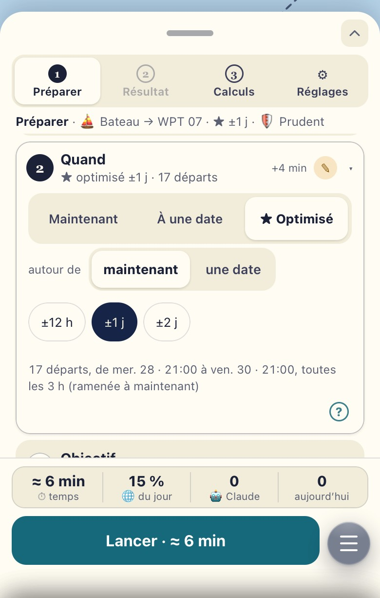
★ Optimisé ±1 j. Le ✎ dit « changé pour ce calcul » ; « +4 min » est le prix en temps. -
Objectif
Fermée
🛡 Prudent · limites à 80 %
🛡 Prudent Votre défaut. Reste sous 80 % de vos limites, arrive de jour, puis le confort, puis la vitesse. Accepte d’aller plus lentement aujourd’hui pour éviter le gros temps demain. 🛋 Confort Moins de près et de mer de travers. ⚡ Rapide L’arrivée la plus tôt, dans vos limites. Toujours calculée aussi : c’est la route de référence. ⛵ Voile Le moins de moteur, sans être plus de 15 % plus lente que Rapide. ✏️ Personnalisé Votre ordre de priorités et vos valeurs. Le bouton apparaît une fois enregistré dans ⚙ Réglages → Objectif. « L’ordre des priorités et les valeurs › » pour aller plus loin.
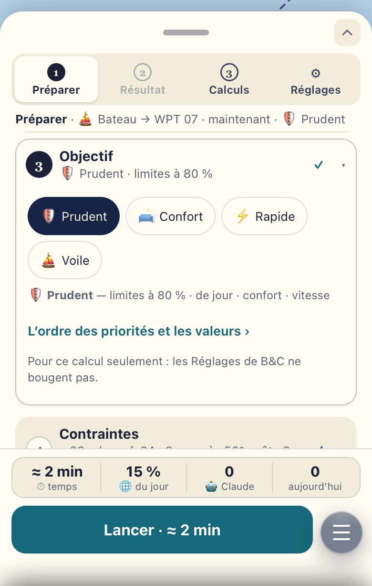
Les objectifs. « Pour ce calcul seulement : les Réglages de B&C ne bougent pas. » -
Contraintes
Fermée
≤ 26 nds · raf. 34 · 3 m · près 50° · côte 3 M
- Ce qui limite la route, avec – et + : vent max 26 nds, rafales 34 nds, vagues 3 m, près pas sous 50°, la côte à 3 milles, les petits fonds.
- Plus bas dans l’étape : les dangers (🐋 orques, le large du Sahara) — signalés, évités, à quelle distance.
- Changées ici : pour ce calcul seulement (✎). « Revenir à mes valeurs par défaut » remet ces limites.
- Le moteur et le gazole ne sont pas ici : ce sont des réglages du bateau, dans ⚙ Réglages → ⛽ Moteur et gazole. Chaque calcul les prend tels quels.
- Pour changer vos valeurs pour de bon : ⚙ Réglages (plus bas).
-
Sensibilités
Fermée
polaire selon les cases · 2 à bord · aucune
D’abord, les hypothèses du calcul
- ⛵ Polaire : son incertitude. Aucune · Prudente (toutes les cases −10 %) · Fourchette (85 à 110 %) · Par case (selon la confiance de chaque case : votre défaut).
- 😴 Équipage : 2 à bord, 6 heures dures d’affilée au plus, une nuit en mer « coûte » 3 h, 2 % de rendement perdu par jour après 48 h, préférer arriver reposés.
- 🌙 La nuit, la polaire à : 100 % par défaut — la nuit comme le jour. La nuit, ni spi ni gennaker, des ris pris tôt : à 90 %, le calcul fait aller le bateau 10 % moins vite sous voiles une fois le soleil couché (au moteur, rien ne change ; sous 4,5 nds à la voile, le moteur prend le relais, comme le jour). Ici, un choix vaut pour ce calcul seulement ; votre défaut se règle de la même façon dans ⚙ Réglages → 😴 Équipage. Les valeurs sont mesurées sur les données du bord (17 juin – 5 nov., 12 nuits) : Comme le jour · 100 % · Médiane · 97 % · 80ᵉ centile · 96 % · ✏️ Personnalisé — un écart nuit / jour pas encore sûr ; rien ne s’applique tout seul (plus bas).
- Changées ici : pour ce calcul seulement (✎) ; la famille peut les changer aussi. Les valeurs par défaut : ⚙ Réglages → ⛵ Polaires et 😴 Équipage.
Puis, des calculs en plus skipper
Pour savoir si la réponse tient quand on change une hypothèse. ⛵, 😴 et 🌙 se calculent aussi hors ligne, sur l’appareil ou au PC du bord (quelques secondes de plus) ; 🎲 reste au nuage — l’app le dit.
Case Ce qu’elle fait Prix 🎲 Ensembles météo 173 variantes de la prévision : l’arrivée au plus tôt, la plus probable, au plus tard, et la part de jour. Au nuage depuis l’iPhone et l’iPad (pas encore essayés sur l’appareil lui-même) ; sur place sur un ordinateur capable et au PC du bord. au nuage : ≈ 5 min (150 milles) à ≈ 13 min (770 milles)
≈ 2 200 crédits*⛵ Incertitude des polaires La route refaite avec le bateau à 85 % (carène sale, chargé) et à 110 % (bien réglé). Aussi hors ligne. ≈ 5 à 15 s
0 crédit
ici : quelques secondes😴 Équipage / perf. La route refaite « reposés », puis « fatigués ». Aussi hors ligne. ≈ 5 à 15 s
0 crédit
ici : quelques secondes🌙 La nuit autrement La route refaite avec deux autres polaires de nuit : 100 % (la nuit comme le jour) et 10 % sous votre réglage — à 100 % : 90 et 80 %. La case le dit : « (100 · 97 · 87 %) ». Aussi hors ligne. ≈ 5 à 15 s
0 crédit
ici : quelques secondes* 0 si la même zone a été calculée il y a moins de 3 h. Les temps grandissent avec la route : chaque case dit celui de VOTRE calcul (le même modèle partout, 30 oct.).
![L’étape 5 ouverte : la ligne dit polaire selon les cases · 2 à bord · aucune ; dessous, Polaire : Incertitude des polaires, Aucune, Prudente, Fourchette, Par case (choisi) ; Équipage : Personnes à bord 2, Heures dures d’affilée 6 h, Une nuit en mer coûte 3,0 h, Rendement perdu par jour 2,0 % après 48 h, Préférer arriver reposés (allumé) ; La nuit, la polaire à, avec son point d’interrogation, et quatre boutons : Comme le jour 100 % (choisi), Médiane 97 %, 80ᵉ centile 96 %, Personnalisé 60 – 100 % ; en bas, la bande des coûts et Choisis une arrivée (étape 1).](img/iphone-etape5.jpg)
Les hypothèses d’abord : ⛵ la polaire, 😴 l’équipage, et en dernier 🌙 la nuit — les mêmes choix qu’en ⚙ Réglages, pour ce calcul. Les quatre cases des calculs en plus sont plus bas. -
Météo
Fermée
🌐 En direct · 6 modèles
- 🌐 En direct : la prévision du moment, six modèles et les vagues. ≈ 1 450 crédits pour une zone neuve, 0 si elle est déjà là.
- 🗄 Précédente : rien n’est téléchargé. Le calcul reprend la dernière météo gardée pour la zone, quel que soit son âge. Le résultat dit cet âge et la confiance baisse. 0 crédit.
- 🧪 Fictive (test) : une météo inventée, pour essayer sans rien dépenser. « TEST » partout ; jamais montrée à la famille. 0 crédit.
- Les six modèles : ECMWF IFS (la référence), GFS, ICON, ECMWF AIFS, UK Met Office, Météo-France.
- La source se règle au skipper ; la famille calcule toujours en direct.
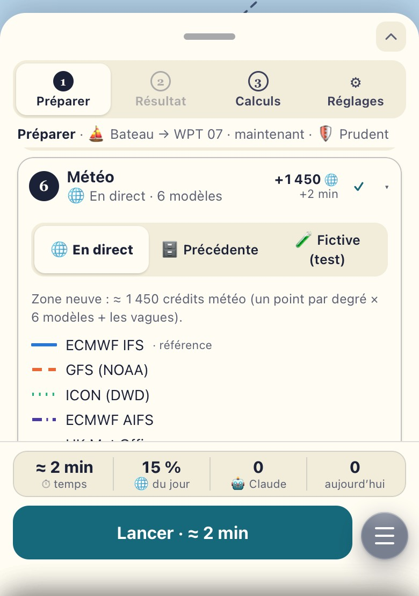
« Zone neuve : ≈ 1 450 crédits météo ». La ligne fermée porte « +1 450 · +2 min ». -
Calcul : où calculer
Fermée
☁️ Nuage
- ☁️ Nuage : par défaut. Le calcul se fait à terre ; il faut du réseau. Vous pouvez quitter la page : le résultat vous attendra.
- 📱 Cet appareil : le même calcul sur l’iPhone ou l’iPad, sans réseau, avec une météo rangée d’avance (voir Hors ligne). ≈ 15 s, 0 crédit ; ⛵ et 😴 aussi (quelques secondes de plus) ; ★ Optimisé : une grille légère sur l’iPad (≈ 1 min), pas sur l’iPhone ; 🎲 au nuage depuis l’iPhone et l’iPad (un ordinateur capable, comme le Mac de Flavien, calcule tout sur place, ensembles compris). Le bouton devient « 📱 Calculer sur cet appareil ». Si le nuage a atteint son budget du mois, le message propose « 📱 Calculer sur cet appareil » en un toucher.
- 🖥️ PC du bord : pas encore installé chez vous. Flavien vous enverra de quoi le faire. D’ici là, laissez-le de côté.
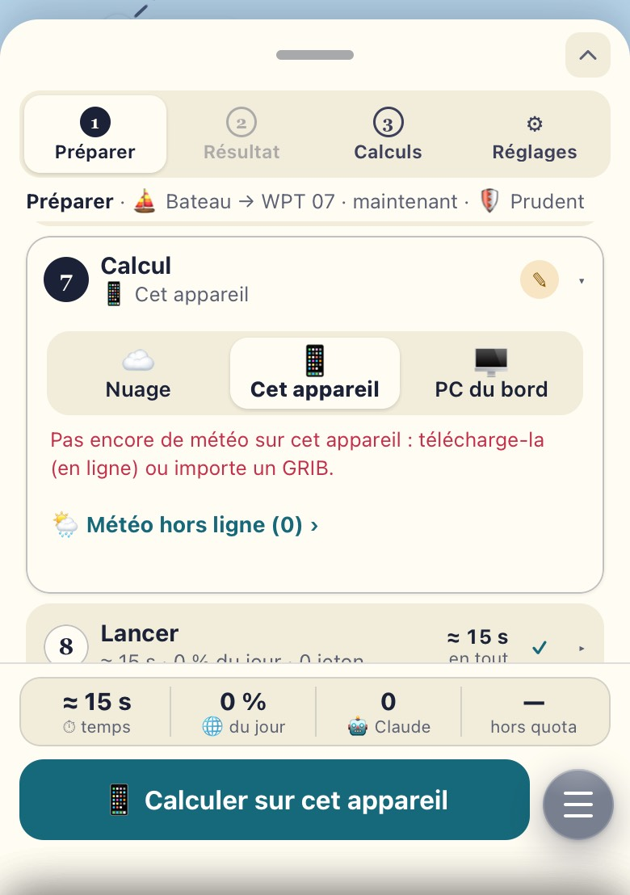
📱 choisi. En rouge : pas encore de météo rangée ici. La bande dit « hors quota ». -
Lancer
Fermée
≈ 2 min · 15 % du jour · 0 jeton
- Une phrase redit tout : « Gibraltar → Puerto de Mogán, départ le meilleur ±1 j, 🛡 Prudent, météo 🌐 en direct, au nuage. »
- Le détail du coût, ligne par ligne, puis « En tout ».
- Une barre : les crédits du jour déjà pris par vos calculs, celui-ci, ce qui restera.
- Puis Lancer · ≈ 2 min. Vous pouvez quitter la page pendant le calcul.
- Pendant le calcul, la barre avance et dit quand il finira : « fin vers 04:12 · ≈ 6 min ». Chaque étape faite dit son temps, celle en cours son temps qui passe (« Option : une route par scénario d’ensemble · 71/173 · 4 min 15 s »). Une étape plus longue que prévu : « ⏳ plus long que prévu », l’heure de fin recule — le calcul continue. Dans Préparer, le pied dit la même chose ; sur iPhone, la feuille repliée aussi.
🤖 Un briefing écrit par Claude
Décoché par défaut. Cochez-le si vous voulez, en plus, un court texte en mots simples. Claude, une intelligence artificielle, l’écrit à partir des chiffres du calcul lui-même : en bref, pourquoi cette route, le passage, ce qu’il faut surveiller, ce qu’il faut télécharger avant de partir.
- Chaque chiffre vient du calcul. Claude n’en invente aucun ; le texte est marqué « ✨ écrit par Claude d’après les chiffres du calcul ».
- Le prix : 2 à 3 centimes (l’app dit « ≈ 4 000 jetons » : la longueur du texte lu et écrit).
- Il peut manquer : jamais sur une météo 🧪 fictive, ni pour un calcul 📱 ou 🖥️. Si Claude ne répond pas, vous avez les raisons du calcul, sans les phrases.
- Après coup : Résultat → ⋯ Détails → « 📋 Briefing » le demande aussi (plus bas).
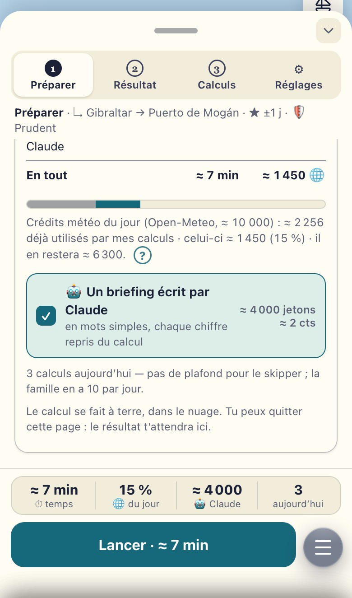
Ici le briefing est coché pour l’exemple : la case Claude de la bande passe à « ≈ 4 000 ».
Au-dessus de « Lancer »
La bande des coûts
Quatre cases, mises à jour à chaque changement. Un toucher sur la bande ouvre le détail (l’étape 8).
| Case | Exemple | Ce qu’elle dit |
|---|---|---|
| ⏱ temps | ≈ 6 min | Le temps du calcul, estimé, arrondi vers le haut — selon la longueur de la route (150 milles ≠ 700), l’endroit (le nuage, ou cet appareil) et les cases cochées. Le même chiffre partout : la bande, l’étape 8, les cases, « ＋ Ajouter un calcul ». |
| 🌐 du jour | 15 % | La part des crédits météo du jour que ce calcul prendra. |
| 🤖 Claude | 0 | Le briefing : 0, ou ≈ 4 000 jetons s’il est coché. |
| aujourd’hui | 3 | Vos calculs au nuage des dernières 24 h. Pas de plafond pour le skipper. La famille voit « 3 / 10 aujourd’hui » : 10 par jour. |
Sur 📱 Cet appareil : 0 % et « hors quota ».
② Résultat
Le résultat
- La réponse d’abord, en une phrase : « Partir mar. 27 · 04:00, à quai dim. 1 vers 8 h, de jour ». Dessous, ce qui la précise : « Au large vers 01:58, 6 h 15 d’attente » et l’heure du port « (07:12 heure locale) ».
- Avec une grille des départs, à droite, le score de votre objectif (« 50 / 100 · 🛡 Prudent »). Puis deux pastilles : la confiance (▮▮▯ moyenne) et la part de vos limites que la route approche (« 80 % des limites » ; ⛔ dès 90 %).
- Trois chiffres : la durée jusqu’au quai (5 j 4 h) · le vent max (≤ 14 nds, raf. 20) · ⛽ les heures de moteur (108 h, ≈ 283 L). Dessous, les dangers croisés (🐋 Orques ibériques ›).
- Ces chiffres sont ceux de la route ★ du maillon touché : votre objectif (🛡 Prudent), ou le départ touché dans le calendrier.
- La confiance dit si les six modèles sont d’accord. Elle ne dit pas si la route est sûre : ce qui approche vos limites est dans « À surveiller ».
- 🛡 Retiré par le garde-fou : si la route d’un autre modèle coupe la côte ou un dispositif de séparation du trafic, elle est retirée du calcul et c’est dit en tête de « La confiance en détail », dans ② Météo (« La route du modèle UK Met Office traversait le dispositif de séparation du trafic de Gibraltar : retirée du calcul »). La route ★ elle-même ne passe jamais par là : sinon le calcul est refusé.
- La famille garde une vue simple, en mots : ni fil, ni étapes, ni tableau.
![Le Résultat sur l’iPhone : en haut la carte, la route verte et la base en tirets gris, les boutons ★ seule et « ◆ la base » ; dans le panneau, le fil 📌 ◆ Base mar. 27 · 04:00, ★ ±1 j la grille des départs (affiché), ⏱ ; la réponse Partir mar. 27 · 04:00, à quai dim. 1 vers 8 h, de jour ; Au large vers 01:58, 6 h 15 d’attente, 07:12 heure locale ; 50 / 100 Prudent ; vs ◆ la base : à quai ±0 ; Confiance moyenne, 80 % des limites ; 5 j 4 h jusqu’au quai, ≤ 14 nds vent max raf. 20, 108 h moteur ≈ 283 L ; Orques ibériques ; Prendre comme réponse, Garder la base ; les onglets ① Quand, ② Météo, ③ Et si…, Tableau.](img/iphone-resultat.jpg)
Le fil du passage skipper
- Sous la ligne du haut, une bande qui défile : ◆ Base › ★ ±1 j › ⏱ mer. 28 · 10:00 › 🎲 › 🌊 Vagues ≤ 2 m … Chaque maillon est un calcul né du précédent ; un toucher l’affiche (la réponse, la carte, le curseur le suivent).
- La réponse dit toujours son écart à son parent : « vs ★ ±1 j (mar. 27 · 04:00) : à quai +1 j 2 h · en mer +2 h · ⛽ +12 h 15 ». La base n’est jamais écrasée.
- Un maillon en cours dit « fin vers … » ; 🧪 / ⚠ s’affichent sur le maillon. Le ＋ au bout du fil mène aux étapes, ou à un autre calcul (✎ un autre trajet ouvre un nouveau passage — plus bas).
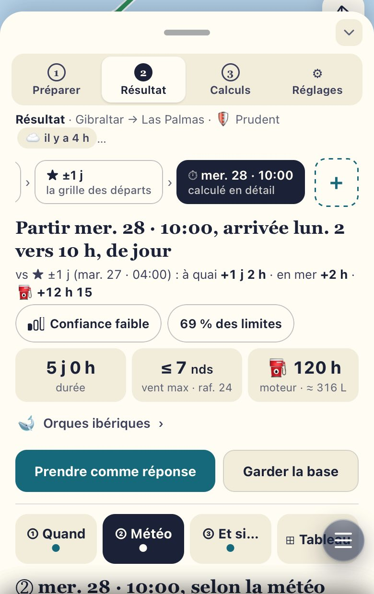
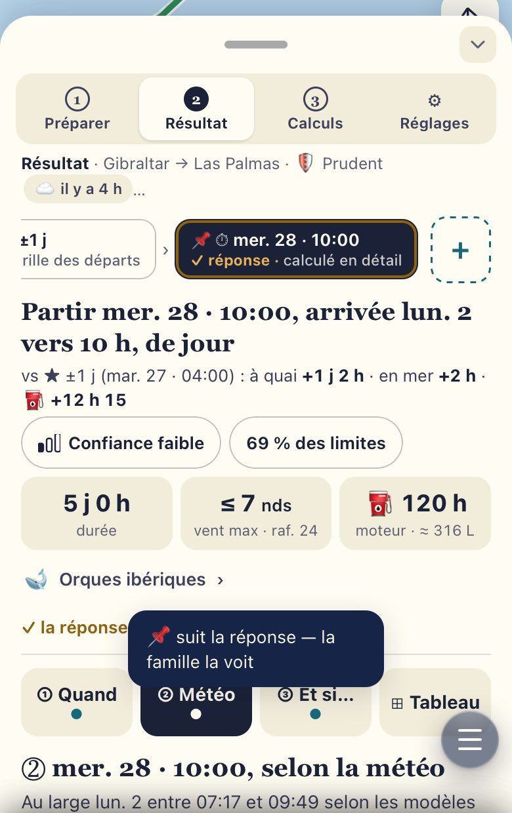
- « Prendre comme réponse » : ce maillon passe en tête du passage — c’est lui qui s’ouvre la prochaine fois. Les autres skippers la voient (« retenue par Bertrand ») ; hors ligne, elle part au retour du réseau, et le dernier choix l’emporte. Le calcul d’un autre skipper s’ouvre en lecture seule.
- Les deux boutons, Prendre comme réponse et Garder la base (ou Garder la réponse quand un autre maillon est retenu), ne s’affichent que s’il y a un choix à faire ; le maillon retenu porte « ✓ la réponse retenue ».
- Le 📌 suit la réponse quand il est déjà sur ce passage : c’est la route que la famille voit sur ses cartes (« 📌 suit la réponse — la famille la voit »). ③ Calculs le montre aussitôt sur la nouvelle ligne.
- S’il est ailleurs, rien n’est épinglé tout seul. S’il ne peut pas suivre (hors ligne, un calcul de cet appareil pas encore envoyé), l’écran dit où il est resté. Jamais une météo fictive 🧪.
Trois questions, dans l’ordre d’un marin
Sous la réponse, quatre onglets : ① Quand · ② Météo · ③ Et si… · ⊞ Tableau. Un seul ouvert à la fois (un toucher sur l’onglet ouvert le referme) ; le point dessous dit ● calculé, ○ à faire.
- ① Quand partir ? Le calendrier des départs : les jours en lignes, les heures en colonnes, comme les dates de Google Flights. La phrase du haut nomme le meilleur (« mer. 28 · 10:00 — à quai lun. 2 · 09:34, 81/100 »).
- L’objectif au-dessus (🛡 · 🛋 · ⛵ · ⚡), puis la valeur, au choix : Score, À quai, En mer, Vent max, Rafales max, Vagues, % des limites, Moteur, Attente. Plus foncé = mieux.
- Les signes : ★ le meilleur (cerclé d’or), ◆ la base, ☾ entre de nuit, ⚓ attend le jour, ≈ calculé en détail, ⛔ hors limites — jamais classé. Un départ passé est grisé et ne se lance plus ; s’il a été calculé en détail, il s’ouvre encore ; quand la ★ est passée, la phrase nomme le meilleur départ à venir.
- …, au bout des valeurs : les poids du score et comment il se calcule (temps, confort, marge, jour, certitude). Glisser un poids recalcule le score des cases sur l’appareil, sans relancer de calcul, et passe l’objectif en ✏️ Personnalisé : vos poids sont gardés avec lui (⚙ Réglages → Objectif), le prochain calcul aura sa ligne ✏️.
![① Quand partir ? Le meilleur pour Prudent : mer. 28 · 10:00 — à quai lun. 2 · 09:34, 81/100 ; les objectifs Prudent (choisi), Confort, Voile, Rapide ; les valeurs Score (choisi), À quai, En mer, Vent max et le bouton … ; le calendrier mar. 27, mer. 28, jeu. 29 sur 01h à 22h, des scores de 46 à 81, ★ sur mer. 28 · 10:00, ◆ sur mar. 27 · 04:00, des ancres ; la légende ; dessous, ouvert par …, 50 / 100 · Prudent · les poids de l’objectif : Temps 10 / 10, Confort 4 / 20, Marge 17 / 35, Jour 16 / 25, Certitude 3 / 10.](img/iphone-quand.jpg)
![Le calendrier avec deux cases cerclées, mer. 28 · 16:00 et mer. 28 · 22:00 ; la carte de la case touchée : mer. 28 · 22:00 → à quai mar. 3 · 08:14, Prudent, 5 j 1 h en mer + 9 h 30 d’attente, vs ◆ la base : à quai +2 j 0 h ; le bouton ≈ Calculer ce départ en détail, les 6 modèles et l’optimiseur pour ce départ · ≈ 90 s · même météo, 0 crédit ; ✓ Dans le panier — retirer ; puis Le panier · 2 départs, mer. 28 · 16:00 et mer. 28 · 22:00, et le bouton Les 6 modèles pour 2 départs · ≈ 3 min · même météo, 0 crédit.](img/iphone-panier.jpg)
- Une case touchée montre sa carte : l’heure à quai, le temps en mer, l’écart à la base. Puis ≋ Calculer ce départ en détail, avec son temps, en un toucher : les 6 modèles et l’optimiseur, sur la même météo (0 crédit).
- 🧺 Le panier : touchez un départ, ＋ Au panier, recommencez. Le bouton du panier calcule tout, l’un après l’autre, avec le temps total annoncé (« ≈ 3 min · même météo, 0 crédit »). Chaque départ devient un maillon ⏱ du fil.
- ② Ce départ, selon la météo. Une phrase : où arrivent les modèles, avant ou après le lever du jour, et si la réponse tient (« 🛡 Prudent entre de jour, à 10:02 : la réponse tient »).
- La frise des arrivées : chaque modèle a sa forme, la nuit est grisée, l’heure à quai est le trait plein. Dessous, les modèles en liste ; un modèle trop court dit pourquoi (✕).
- 🎲 Ajouter les ensembles (173 scénarios), avec son temps et ses crédits ; « ▸ Où les météos divergent, heure par heure » ; la confiance en une phrase.
- Pour une case de la grille pas encore calculée, ② propose de la calculer ici, sur la météo du calcul (0 crédit).


- ③ Et si… D’abord ce qui ferait bouger l’heure à quai, en heures autour de 0 : en clair l’incertain (la météo), en foncé les essais déjà faits. Ce qui ne change rien tient en une phrase.
- Puis les leviers, chacun avec la valeur de la base et une à trois valeurs à essayer : vagues, vent, moteur, nuit, polaire, équipage, 🌙 la nuit (les valeurs mesurées — 97 · 96 % — autres que la vôtre, et 100 % si vous êtes en dessous). Une puce en tirets dit son coût (« à calculer ≈ 90 s »).
- Chaque essai est un nouveau maillon ; touché, sa comparaison avec la base en cinq lignes (à quai, en mer, l’attente, les vagues, le moteur), et sa route en tirets or sur la carte.
- ⊞ Le tableau (vue avancée) : les départs en colonnes, en lignes l’objectif, le modèle ou un seuil (vagues, vent, moteur, polaire, équipage, 🌙), et une valeur.
- Une case hachurée n’est pas calculée : son coût est écrit dedans (« 90 s »), un toucher la calcule (un maillon, sur la météo du calcul).
- ≈ marque une passe de la grille (dans la ligne ◆ d’un seuil, à côté des départs calculés en détail) : touchée, ≋ Calculer ce départ en détail s’affiche sous le tableau. Une colonne passée est grisée.
- ⇄ échange lignes et colonnes. « 🗓 Chaque modèle à chaque départ » remplit la ligne des modèles d’un coup. Une ligne entière de seuils se calcule au PC du bord. Sur l’iPad et l’ordinateur, le panneau s’élargit.

Puis des cartes repliées
- Fermées, elles disent l’essentiel en une ligne : Heure par heure · À surveiller ⚠ 6 (« Arrivée de nuit · Beaucoup de moteur… ») · ⋯ Détails.
- ⋯ Détails : les modèles en chiffres, les routes (comparer), la météo toutes les 3 h, la feuille de route (B&G), 📋 le briefing, Δ ce qui a changé, 📌 Montrer à la famille.
- Tout en bas : 📤 Exporter / Partager (plus bas).
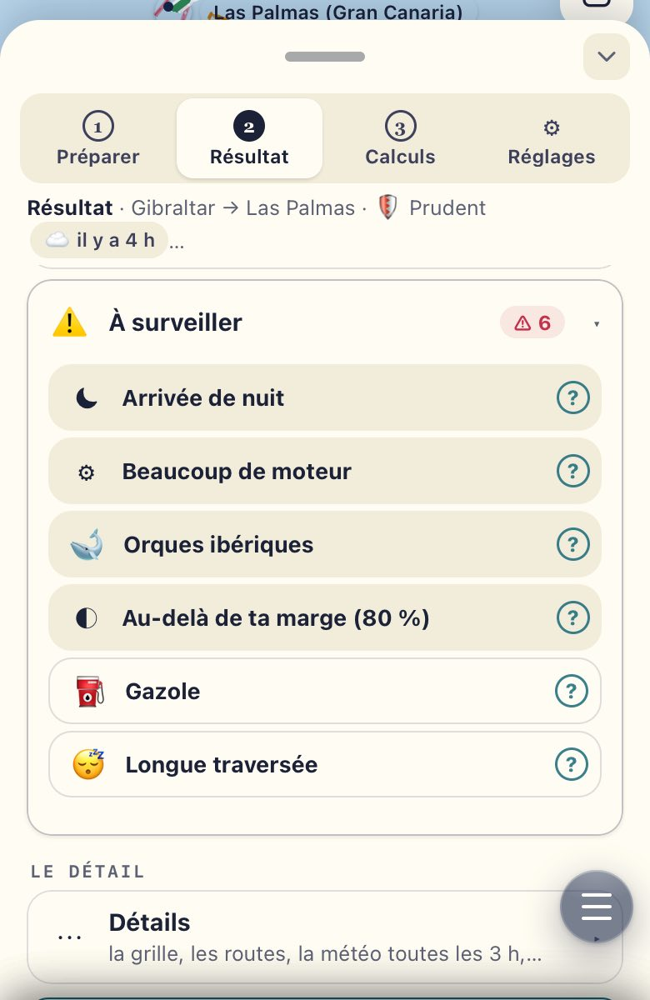
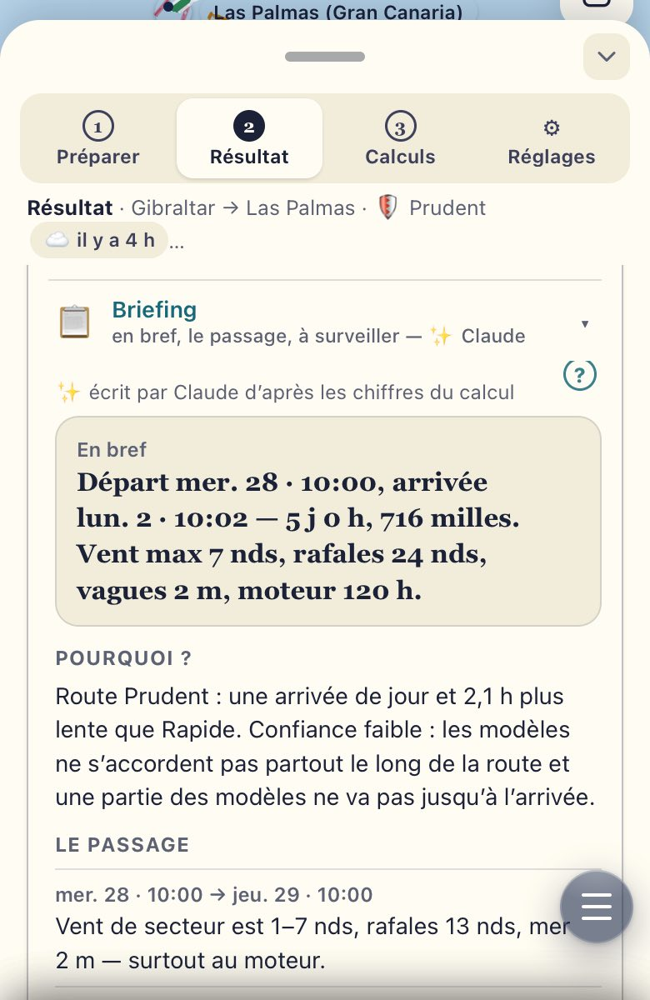
Au-dessus du panneau
La carte
- Trois boutons à droite : ⋯ (l’aide, « une aide, pas une vérité » ; sur une fenêtre étroite, la disposition) · 🗂 Calques · la vue, dont l’icône change (voilier, viseur, drapeau) : départ, point choisi, arrivée, toute la route.
- En Résultat, en haut à gauche : ★ seule · ≋ Modèles · ▒ Bande — la route ★ seule (les autres objectifs en gris, avec leur écart), un trait par modèle, ou la bande des modèles en travers de la route. Sur l’iPhone, ≋ et ▒ sont des icônes. Dessous, la légende : ◆ la base en tirets gris, un essai en tirets or.
- 🗂 Calques : un panneau qui prend la place du routage ; la carte reste visible. La météo : Aucune · Vent · Rafales · Vagues. Le vent en Barbules (force et direction exactes) ou Particules (comme 🗺 Carte). Le modèle. « Le long de la route » : le vent que le bateau rencontrera, là où il sera. ✕ ferme.
- ⚠️ Dangers (dans Calques) : une case par zone (🐋 orques, Sahara occidental · Mauritanie), allumées par défaut. Les masquer ne change ni le calcul ni « À surveiller ».
- ▶, dans la bande sous la carte (en Résultat, le panneau baissé) : l’heure, le vent, les vagues et la vitesse à cet instant, et le profil du passage. ▶ le rejoue : le point du bateau avance le long de la route (10 h de route par seconde ; sur l’iPad, ×10 change la vitesse) ; glissez sur la bande pour choisir une heure.
- L’épingle : un appui long sur la carte → « Arriver ici ? » ; glissez-la, puis Confirmer (✕ pour renoncer).
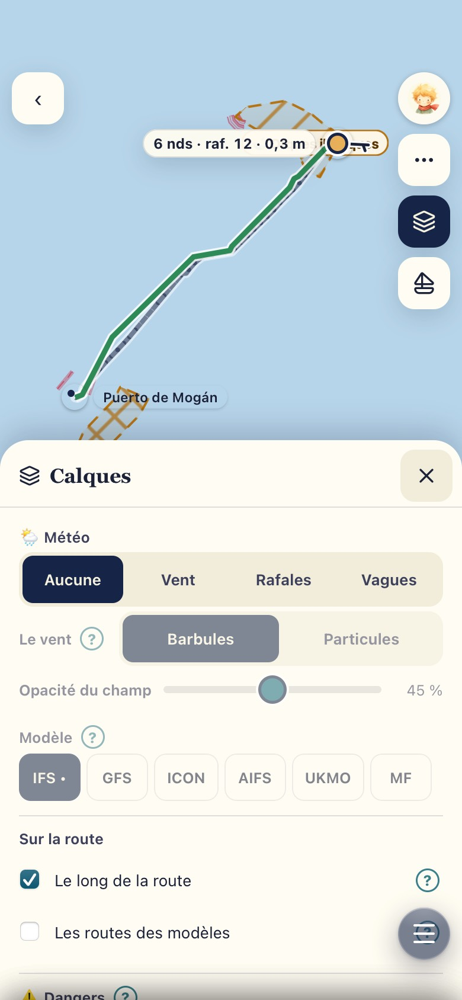
Au bout du fil
＋ Ajouter un calcul
Le ＋ au bout du fil (la famille : en bas de la page) ouvre le menu — d’abord les trois étapes (⏱ un autre départ → ①, ≋ les modèles de ce départ → ②, 🚧 une limite → ③), puis les calculs :
- ✎ Modifier l’arrivée ou le départ : un autre port, une autre heure — un nouveau passage ;
- ★ Optimiser la date ±1 j : un départ toutes les 3 h autour de celui-ci — seulement tant que le passage n’a pas sa grille des départs ;
- 🎲 Ajouter les sensibilités : ensembles, polaires, équipage, 🌙 la nuit — seulement celles qui manquent (« Ajouter les ensembles et la polaire de nuit ») ;
- ↻ Relancer le même calcul : avec la météo la plus récente — un nouveau passage ;
- ＋ Nouveau calcul, sans lien : repart de vos valeurs — un nouveau passage.
Préparer revient prérempli, avec ✎ sur l’étape changée. La ligne du haut commence par « ↳ » : le nouveau calcul est lié au premier (« À partir de : … » ; ✕ « Indépendant » coupe le lien).
0 crédit quand la zone a été calculée il y a moins de 3 h.
♻ ★ et 🎲⛵😴 ne refont pas le calcul affiché. Ils partent de son résultat — sa route, ses modèles, l’optimiseur sont repris — et lisent exactement la même météo, même si elle a plus de 3 h : rien n’est téléchargé (0 crédit), seule l’option ajoutée se calcule, et la réponse se compare à celle d’origine. Préparer l’annonce sous « ↳ À partir de » (« ♻ Même météo que ce calcul (d’il y a 4 h)… »), le nouveau résultat aussi (« ♻ Même météo que le calcul de base · il y a 4 h »).
⟳ Si vous changez l’arrivée, le départ, l’heure (sauf avec ★, qui essaie d’autres départs), les réglages ou la source de la météo — ou si cette météo n’est plus là (calculée sur un autre appareil, ou trop ancienne pour le service) — c’est un calcul complet, et c’est dit (« Calcul complet : réglages changés »). Chaque nouvelle route passe les mêmes contrôles : la terre, les dispositifs de séparation, les dangers.
Dans le nouveau résultat, la ligne « vs … » sous la réponse dit l’écart à son parent ; ⋯ Détails → « Δ Ce qui a changé » dit ce qui a bougé : l’arrivée, le vent, les vagues, la route, la certitude, la météo.

③ Calculs
Vos calculs
- Vos derniers calculs : faits, ratés ou annulés. Chaque ligne dit ce qui a été calculé, avant qu’on l’ouvre : l’arrivée, quand, l’objectif, l’arrivée prévue, et où (☁️ 📱 🖥️).
- Un passage = une carte : la base, puis ses maillons en puces (★ ⏱ 🎲 🌊…) — un toucher ouvre le maillon ; ✓ marque la réponse retenue (« retenue par … » si ce n’est pas vous ; « Passage de … » : celui d’un autre skipper, quand il a une réponse) ; « ⋯ Les N calculs du passage en détail » déplie leurs lignes (☆, ⋯). Un autre trajet (✎) ouvre sa propre carte (↳ ✎). « affiché » marque celui qui est à l’écran.
- ☆ sur la ligne : marquer ★.
- ⋯ : le détail, 🗄 Archiver, 🗑 Supprimer. Supprimer demande confirmation dans la page : « Supprimer ce calcul ? » → Supprimer / Garder.
- La route montrée à la famille (📌) ne se supprime pas : retirez d’abord le 📌. Un calcul en cours non plus. Quand le 📌 suit « Prendre comme réponse », la liste le montre tout de suite sur la nouvelle ligne.
- Les filtres : Tous · ★ · Archivés. « Tous » cache les archivés.
- Un calcul raté dit pourquoi, en clair (« Le service météo gratuit a refusé… »).
- En bas : « ＋ Nouveau calcul ».
![Le mode Calculs : 11 calculs, 0 ★, 0 archivés ; filtres Tous 11, ★ 0, Archivés 0 ; une carte pour le passage Las Palmas : la ligne de la base, départ mar. 27 · 04:00, Prudent, à quai dim. 1, avec ☆ et ⋯ ; ses maillons en puces : ★ ±1 j, ⏱ mer. 28 · 10:00 ✓ (touché), Les ensembles, Vagues ≤ 2 m, Moteur sous 3,5 nds, Vagues ≤ 2,5 m, Vent ≤ 22 · raf. 29, Nuit acceptée ; Réponse retenue sur cet appareil : ⏱ mer. 28 · 10:00 ; Les 8 calculs du passage en détail ; dessous, la carte d’un autre trajet, ↳ ✎ ; en bas, Nouveau calcul.](img/iphone-calculs.jpg)
⚙ Réglages, dans le routage
Vos valeurs par défaut
- Les valeurs de départ de chaque calcul, groupe par groupe : Objectif · Contraintes · Dangers · Moteur et gazole · Polaires · Équipage · Source météo · Où calculer · Feuille de route.
- Le moteur et le gazole ne se règlent qu’ici : Préparer ne les montre pas, chaque calcul les prend tels quels.
- Fermé, chaque groupe dit ses valeurs en une ligne.
- Dès qu’une valeur change, le bas du panneau montre Annuler et Enregistrer · 1 changement. Rien n’est gardé avant « Enregistrer ».
- La famille voit ces valeurs en lecture seule.
| Objectif | 🛡 Prudent · marge 80 % |
|---|---|
| Vent · rafales | 26 nds · 34 nds |
| Vagues | 3 m |
| Près | pas sous 50° |
| Côte | 3 milles |
| Gazole | 550 L · réserve 20 % |
| Moteurs | 2,54 et 2,72 L/h |
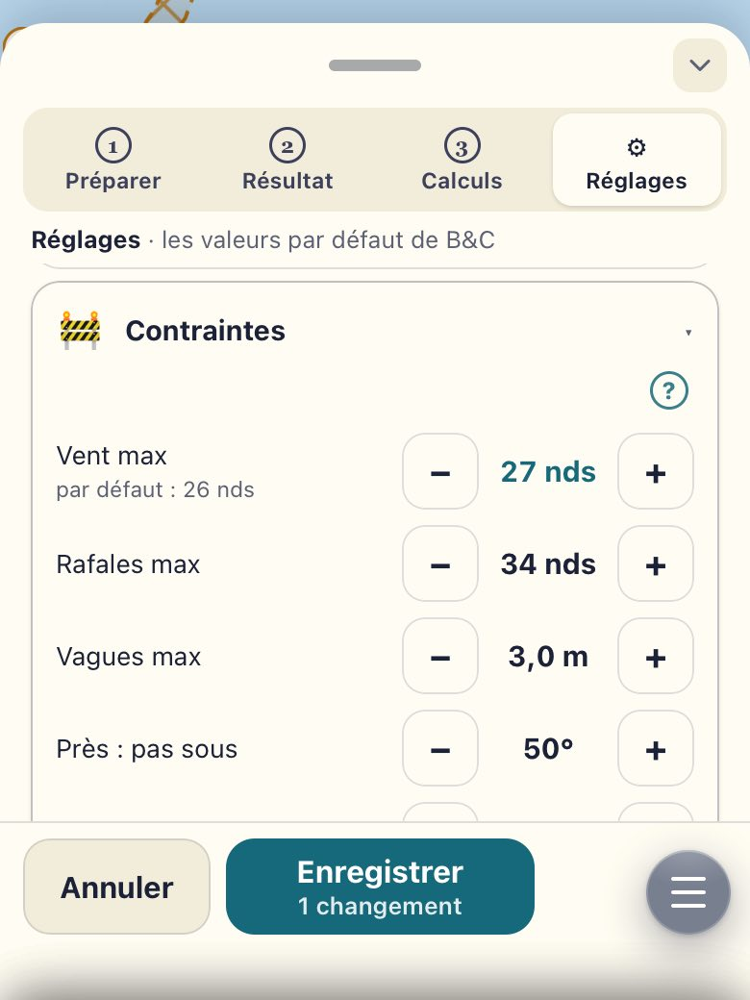
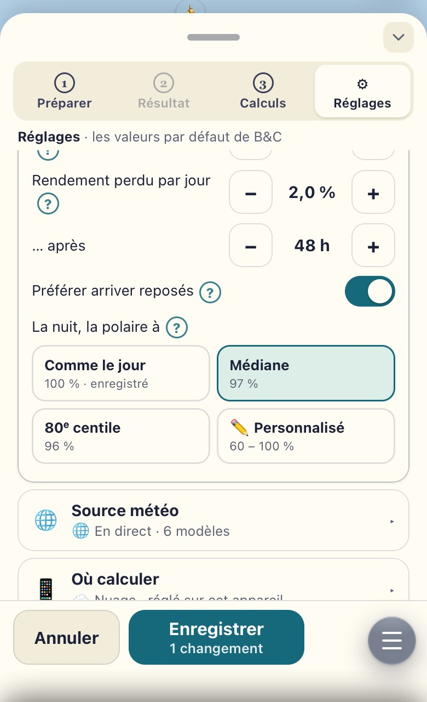
- 😴 Équipage → 🌙 La nuit, la polaire à : un choix. Comme le jour · 100 % (le défaut : rien ne change) · Médiane · 97 % (la vitesse rapportée à la polaire, la nuit contre le jour, sur 12 nuits et 210 fenêtres de nuit contre 409 de jour) · 80ᵉ centile · 96 % (les mêmes fenêtres, comme la polaire elle-même se définit) · ✏️ Personnalisé (60 à 100 %, avec – et +). « ? » dit d’où vient chaque chiffre et sa fourchette ; l’écart nuit / jour n’est pas sûr. Un choix ne fait que préparer : rien ne change avant « Enregistrer ».
Une fois la route choisie
En mer
📌 Retenir la route
Résultat → ⋯ Détails → 📌 Montrer à la famille. Cette route ★ devient la route retenue : la famille la voit, la tuile du Cockpit et « En route » la suivent. Ensuite, « Prendre comme réponse » dans le même passage la déplace (le fil). Une route 🧪 fictive ne se retient jamais.
⛵ En route
Partis avec la route retenue, une ligne sous la réponse ouvre « ⛵ En route ». Il s’ouvre seul à plus de 5 milles du départ : l’avance ou le retard, l’écart et son côté (« 2,1 M au sud-est »), l’arrivée estimée, le prochain point (cap et milles depuis le bateau), le prochain changement de cap et la manœuvre probable (empanner, virer), les 12 prochaines heures. « ↻ Recalculer depuis ici » repart de votre dernière position.
🧭 La tuile Route du Cockpit
En haut du Cockpit, avant la voilure : « Route · Las Palmas », l’arrivée estimée en grand, l’avance, l’écart, le cap conseillé, et le « Prochain changement ». Un toucher ouvre « En route ».
📱 Hors ligne
Avant de perdre le réseau, avec Starlink : étape 7 → 📱 Cet appareil → « 🌦 Météo hors ligne › » → ⬇ Télécharger la météo (ce passage ou autour du bateau, 3 à 10 jours ; le prix en crédits s’affiche avant). Ou « 📦 Importer un GRIB » de NavimetriX.
Ensuite, sans réseau : « 📱 Calculer sur cet appareil ». L’iPhone prend 3 modèles et 2 routes, l’iPad les 6 modèles. Le calcul reste sur l’appareil et rejoint ③ Calculs au retour du réseau.
| Hors ligne | iPhone | iPad | PC du bord |
|---|---|---|---|
| Le conseil | ≈ 20 s | ≈ 16 s | ≈ 10 s |
| ⛵ 😴 | + 20 s | + 12 s | + 6 s |
| ★ Optimisé | non (la mémoire) | grille légère ≈ 1 min | grille complète ≈ 3 à 4 min |
| 🎲 Ensembles | au nuage — l’app le dit | sur place ≈ 2 à 3 min (leur météo téléchargée en ligne) | |
Grille légère : ±12 h, 9 départs, votre objectif + ⚡ Rapide. Mesuré sur un Mac le 29 oct. (l’iPhone et l’iPad simulés) : à confirmer sur les vôtres.

📄 La feuille de route pour le B&G
- Résultat → ⋯ Détails → « Feuille de route (B&G) ».
- 6, 8 ou 12 points, ou tous. Positions en DM (36°03,2'N 005°24,6'W), DMS ou décimal ; toujours N / S / E / W. Caps vrais. Heures de passage à l’heure du téléphone.
- ⬇ GPX pour le B&G : un GPX léger de ces points seulement. Copier · Partager · Imprimer.
- Aucune branche ne coupe la terre : c’est vérifié sur la côte exacte.
- Rien n’est envoyé au pilote. Vous chargez le GPX vous-mêmes (carte SD ou appli B&G) et vérifiez chaque branche sur la carte du bord.
📤 Exporter / Partager une route
Résultat → 📤 Exporter / Partager, en bas du panneau (la famille : sous la route retenue). Cochez une ou plusieurs routes — celles de ce calcul, la ★ des autres calculs du même passage (6 au plus). Puis l’une des deux formes :
- 🔗 Un lien privé : écrivez pour qui (« Seb », « le routeur »), choisissez la durée (1 jour à 3 mois), Créer le lien, puis Partager… ou Copier. Il s’ouvre sans compte, sur 10 appareils au plus — vous pouvez l’envoyer à quelques personnes ; un 11ᵉ appareil ne l’ouvre pas (« demandez un nouveau lien »). Il montre la carte des routes, leurs heures, leurs points-clés, la météo du calcul et son âge — jamais la position du bateau en direct. Jamais public, jamais trouvé par un moteur de recherche.
- ⛵ Une route calculée « depuis le bateau » part de là où était le bateau au moment du calcul : le panneau le dit avant de créer le lien (« Ce lien montre où était le bateau le lun. 26 · 21:30 (le départ de la route), à toute personne qui l’ouvre »). C’est une position passée, mais tous ceux qui ouvrent le lien la voient. Une route partie de « 📍 Ma position » (le GPS du téléphone, à bord) est dite de la même façon.
- 📄 Un fichier : le GPX (un itinéraire de points-clés par route + la trace complète, heures UTC — pour un traceur, NavimetriX, qtVlm…) ou le PDF (la carte, les points-clés, les heures UTC). Il se fait sur l’appareil, même sans réseau ; vous l’envoyez vous-même.
- « Mes liens » (les skippers : tous) : vu combien de fois, « 📱 ouvert sur N appareils · 10 au plus » ; Oublier les appareils remet le compte à zéro (chaque appareil qui le rouvre est recompté) ; Retirer — le lien ne s’ouvre plus.
- Une route sur météo 🧪 fictive ne se partage pas. Un calcul 📱 pas encore envoyé part en fichier seulement.
![Le panneau Exporter / Partager : la forme Un lien privé (choisie), qui expire, sans compte, 10 appareils au plus, ou Un fichier GPX ou PDF ; Pour qui ? Le routeur ; Valable 1 jour, 3 jours, 7 jours (choisi), 1 mois, 3 mois ; Le lien s’ouvre sans compte jusqu’au mar. 3 nov. — jamais public, jamais indexé ; il montre le plan, jamais la position du bateau en direct ; 10 appareils au plus, Oublier les appareils ; l’avis ⛵ Ce lien montre où était le bateau le lun. 26 · 21:30 (le départ de la route), à toute personne qui l’ouvre ; Créer le lien ; Les liens : Le routeur, 1 route, vu 3 fois, ouvert sur 1 appareil · 10 au plus, Copier, Oublier les appareils, Retirer.](img/iphone-partager.jpg)
Le quart de nuit
La nuit
- Votre avatar, en haut à droite → « En mer » → Mode nuit rouge.
- Tout passe au rouge sombre, sans éblouir.
- La météo se lit en bandes de rouge. La route mise en avant reste un trait épais plein, les autres des tirets fins.
- Les boutons gardent leur forme, en rouge sombre ; ★ ◆ ☾ ⚓ ⛔ sont des formes, pas des couleurs : le calendrier se lit aussi, plus clair = mieux.
- Même chemin pour revenir au jour.
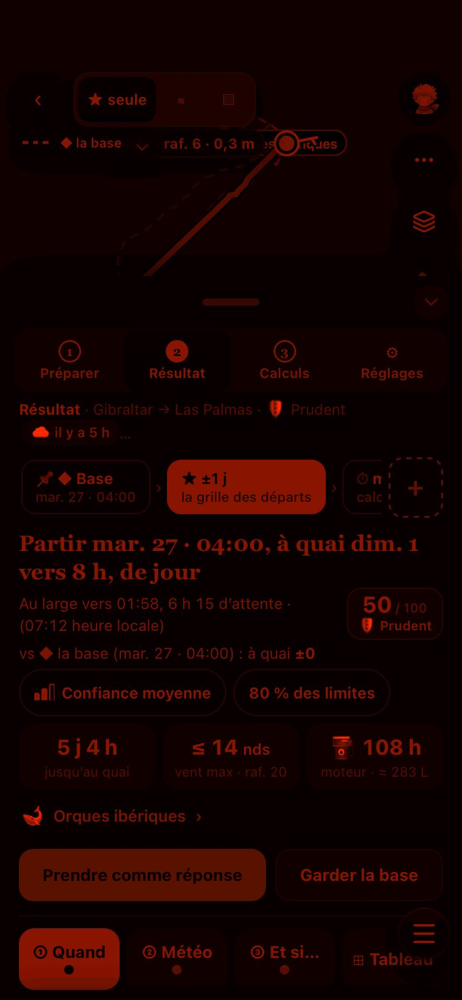
Plus de place
Sur l’iPad
- Couché : les quatre modes forment un rail à gauche ; la barre de l’app se replie en icônes le temps du routage. Le panneau à gauche, la carte à droite, le profil le long de la route sous la carte. Le panneau s’élargit pour ⊞ le tableau.
- Debout : la même chose, sans le rail — le panneau à gauche, la carte à droite, le profil dessous ; les quatre modes restent en haut du panneau, et la carte garde sa largeur. ① Quand ne tombe plus sous la carte.
- Plusieurs étapes de Préparer ou cartes peuvent rester ouvertes en même temps. Au Résultat, ① ② ③ ⊞ restent un onglet à la fois, comme sur l’iPhone.
![L’iPad couché : à gauche la barre de l’app en icônes puis le rail Préparer, Résultat, Calculs, Réglages ; le panneau du Résultat : le fil 📌 ◆ Base, ★ ±1 j la grille des départs, ⏱ ; la phrase Partir mar. 27 · 04:00, à quai dim. 1 vers 8 h, de jour, 50 / 100 Prudent, Confiance moyenne, 80 % des limites, les trois chiffres, Orques ibériques, Prendre comme réponse, Garder la base ; ① Quand ouvert : le calendrier des départs ; à droite la carte avec ★ seule, Modèles, Bande, la route verte, les autres objectifs et la base en tirets ; dessous, le profil du vent, des vagues, de l’accord et du moteur le long de la route.](img/ipad-couche.jpg)
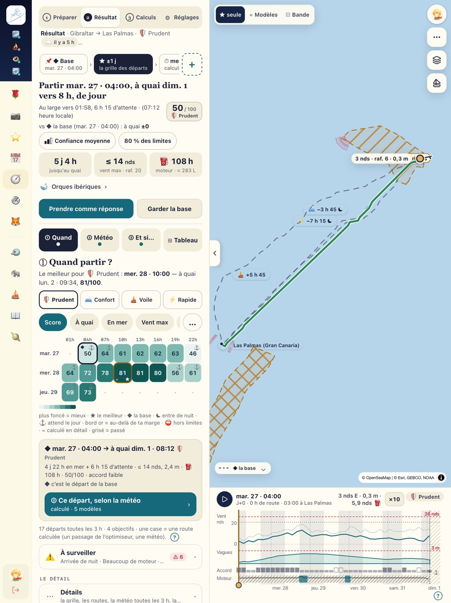
Au port, avec Starlink
Le test de 10 minutes
Sur l’iPhone, puis la même chose sur l’iPad. Un seul vrai calcul. Une capture 📸 aux lignes marquées. Avant : la version et les crédits.
| # | Minute | À faire | À regarder | 📸 |
|---|---|---|---|---|
| B1 | 0–1 min | 🧭 Routage | Les quatre modes en haut (iPad couché : le rail à gauche). « Résultat » grisé tant qu’aucun calcul n’existe ; s’il y en a, l’app s’ouvre sur Résultat : touchez ① Préparer. | 📸 l’arrivée |
| B2 | 1–2 min | Sans rien ouvrir, lire les 8 lignes de Préparer | Chaque ligne se comprend-elle seule ? Que veulent dire ✓ / ✎ / ⚠ ? | |
| B3 | 2–3 min | Ouvrir 1 → l’arrivée. Ouvrir 5 → cocher 🎲, puis décocher | La bande des coûts bouge (temps, % du jour). Est-ce clair ? | 📸 la bande |
| B4 | 3–4 min | Toucher la bande des coûts | Le détail (étape 8) : utile, ou trop ? | |
| B5 | 4–6 min | Lancer (le seul vrai calcul) | La progression, puis le Résultat : la phrase, les 3 chiffres, « À surveiller ⚠ N » | 📸 le résultat |
| B6 | 6–7 min | Déplier « À surveiller », puis ▶ dans la bande sous la carte | ▸ / ▾ : la ligne entière se touche ? | |
| B7 | 7–8 min | Le ＋ au bout du fil → ★ Optimiser la date ±1 j (ne pas lancer) | Préparer revient prérempli, ✎ sur l’étape 2 et 0 crédit | 📸 |
| B8 | 8–9 min | ③ Calculs : retrouver le calcul, ☆, ⋯ | Retrouve-t-on ce qu’on a fait ? | |
| B9 | 9–10 min | ⚙ Réglages : déplier « Contraintes », sans enregistrer | Vos valeurs : 26 nds · raf. 34 · 3 m · près 50° · côte 3 M (la marge 80 % est dans « Objectif ») | |
| B10 | le soir | Mode nuit rouge (menu de l’avatar) : une capture | Tout est lisible sans éblouir ? Les deux routes se distinguent ? | 📸 |
À la fin
Les trois questions
Une réponse courte suffit.
- Qu’est-ce qui vous a fait hésiter ?
- Qu’est-ce qui manque pour décider de partir ?
- Un chiffre vous a-t-il paru faux ?
Vos retours, sur WhatsApp
- Un message par remarque. Il commence par « ROUTAGE » et le numéro de la ligne du test :
ROUTAGE B5 — l’heure d’arrivée ne correspond pas à…
- Une capture et une phrase. Un message vocal va très bien aussi.
- Dites : iPhone ou iPad, en ligne ou hors ligne. Pour un calcul, la capture de son détail (③ Calculs → ⋯).
- Hors ligne : gardez les captures et envoyez-les d’un coup au retour de Starlink.
- Même un « RAS » aide !